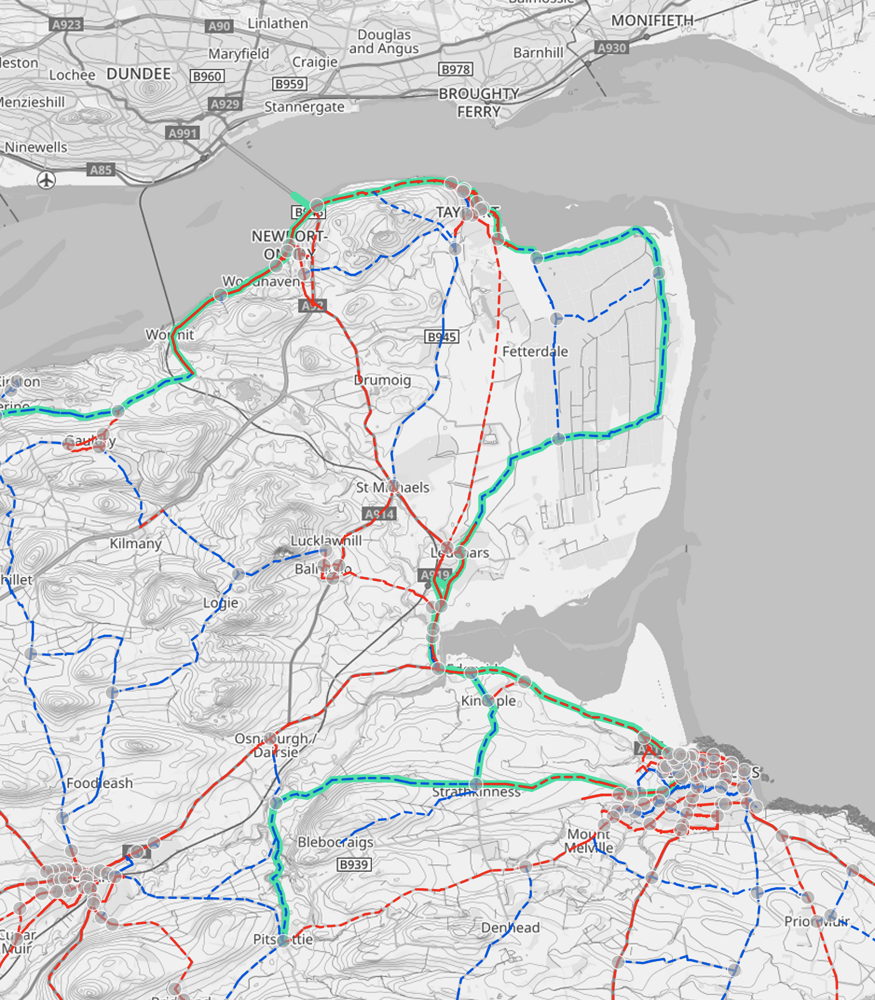

Route Map
We are working on several different possible routes. Three of the broad options are detailed in the interactive map below. Our preferred option is to follow the old Tayport branch railway line (dashed blue). Any of the routes are subject to change with feasibility, practicality, cost and land owner consent all factors in what is finally built.
Click on any route to see more details. The dashed lines are possible routes and solid lines are existing cycle paths.
Route details
Option A – Old Railway Line
Distance: 6.7 km | Status: Preferred route
Option A follows the route of the former Tayport Branch Line, which closed in 1966. The trackbed is largely flat and intact, offering a direct, traffic-free corridor between Tayport and Leuchars. Key advantages include:
- Minimal road crossings, improving safety for all users.
- Low impact on agricultural land compared to the other options.
- Likely the least expensive route to construct due to the existing railway line.
This is our preferred option and the one we are advocating for with Fife Council.
Note that land owners currently oppose large sections of this route as it would require use or acquisition of private land - see here for more info.
Option B – Tentsmuir Forest Route: 8.0 km
Distance: 8.0 km | Status: Alternative under consideration
Option B runs through the interior of Tentsmuir Forest before joining the back road to Leuchars. While it avoids some private land it comes with several challenges:
- The back road to Leuchars is narrow and would need to be widened at several points which would require agricultural land.
- The route is 1.3 km longer than Option A
- Road widening works would possibly be more disruptive and costly than the railway option
- Sections through the forest may be affected by forestry operations
This option remains a “Plan B” but is not currently preferred.
Note that land owners currently oppose large sections of this route as it would require use or acquisition of private land - see here for more info.
Option C – Tentsmuir Route: 8.9 km
Distance: 8.9 km | Status: Alternative under consideration
Option C is a longer alternative through Tentsmuir suggested by some stakeholders. It shares many of the same challenges as Option B, and is an additional 2.2 km compared to the preferred railway route. A large portion of this route would follow an existing forestry track, which offers some advantage, but:
- The overall length makes it less attractive for everyday cycling trips
- The start of the route is prone to flooding, which would likely require major works to construct a raised road, increasing costs.
- The route does not pass through Morton Lochs and so provides less connectivity.
- It still requires road sections as in Option B that would need improvement
This option is retained for completeness but is not preferred at this stage.
Note that land owners currently oppose large sections of this route as it would require use or acquisition of private land - see here for more info.
Active travel strategy
The Tayport Cycle Link forms part of Fife Council’s broader Active Travel Strategy connecting Fife’s towns and villages with safe cycle routes. You can find more information about the Active Travel Strategy on the Fife Council website.

Map of Fife Council’s Active Travel Strategy showing proposed cycle routes in North East Fife